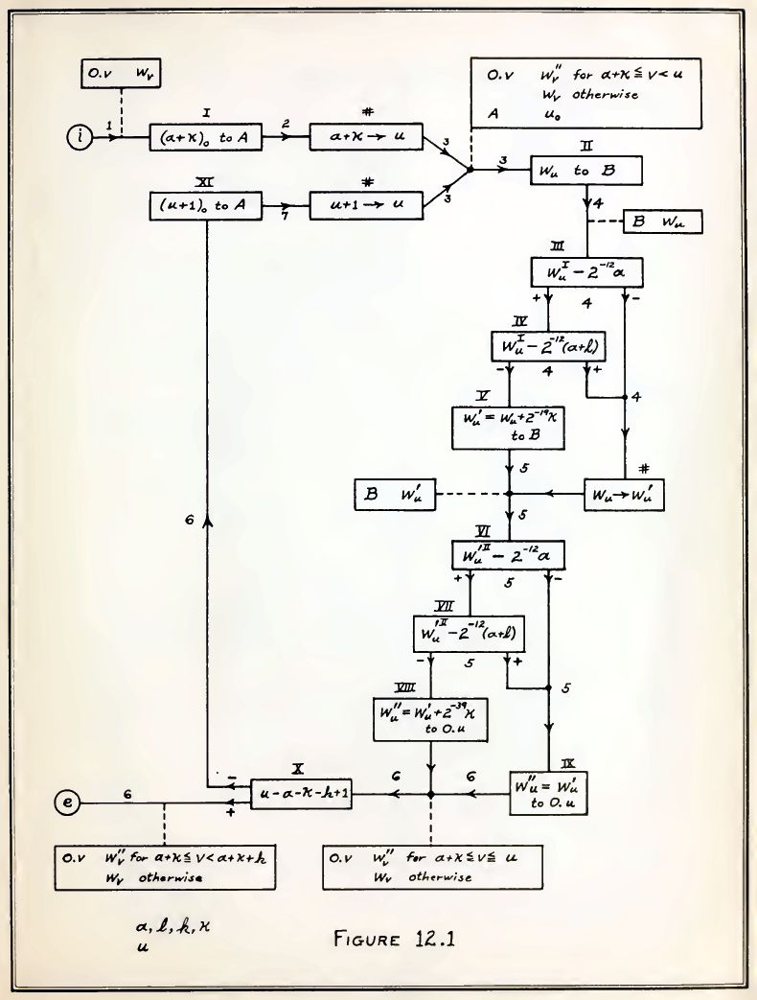

PROGRAMme
Notations: There is no escape
PROGRAMme (leading auhtors: Troy Astarte, Maarten Bullynck, Felice Cardone, Martin Carlé, Liesbeth De Mol, Marie-José Durand-Richard,
Tomas Petricek, Mark Priestley, Henri Salha)

Perlman's button box
Programmable or not?
1) Buttons control turtle 2) "Memory box" buttons 3) Kid interface for LOGO
machine ⟷ human
machine ⟷ notation ⟷ human
Meaning of notations
Negotiation of meaning
- Machine and human "understanding" differ
- Different users have different needs
- Meaning found in operational structure
High programmability
- Potential to establish new meaning
- Allows "meaningful" programming
Blind computation
Blind computation
19th century English algebraists
- \(\sqrt{a-b}\) only defined if \(a\geq b\)
- Independence from arithmetic
- Terms "general in form and value"
20th century mathematical logic
- Tackle decidability problems
- Mechanical rule following
Operational meaning
Meaning in blind computation
- Establishes analogies
that reveal new patterns
Reverse Polish notation
- Example:
3 2 + 5 4 2 * + * - Notation matches evaluator!
Surprise of programming
Electronic speed
[C]ontemplate the prospect of locking twenty people for two years during which they would be steadily performing computations. And you must give them such explicit instructions at the time of incarceration that at the end of two years you could return and obtain the correct result for your lengthy problem! (John von Neumann)
Notations for humans
Flowcharts
- John von Neumann for EDVAC
- Translated manually to instructions
Interpretive subroutines
- Wilkes et al. for EDSAC
- Symbolic codes
- Executed by initial orders

Opening of Pandora's box
Many notations solving:
1) Problem of control
2) User problem
3) Effectiveness problem
Closing of Pandora's box

Like surrealist "exquisite corpse" drawings!
1) Automatic programming
2) Universal language
3) Self-programmability
4) Concrete notations
1) Automatic programming
High-level notations...
Could there be just one?
2) Universal language
One language is not enough
Could it be adaptable?
3) Self-programmability
System as meta-medium
Uses direct representation
4) Concrete notations
Focus on directness
No need for generality...
Self-programmability

LISP
- Recursion & programs as data
- Adaptable meta-notation
- Time-sharing and IBM 704
Smalltalk
- Objects represent real things
- Programmable meta-medium
- Recursion on the notion of computer
There is no escape
There is no escape

No-code programming
- Programming for end-users
- Visual and UI is also notation
- Low notational programmability
Automatic programming, revisited
- AI that "understands" human language
- No negotiation of meaning
- Human is programmed!
PROGRAMme
Notations: There is no escape
Conclusions
If we want meaningful programming
We get notational pluralism
Ideally with high notational programmability